Hi all,
A few weeks back we map an introductory blog for those that are new to dynamic zone visibility. The purpose of it was to introduce newbies to how a boolean parameter helps us leverage what is shown on the page.
We will now take that to the next step which is how we can integrate it into a working dashboard.
Download the workbook to follow along step by step, using the link at the top of the page.
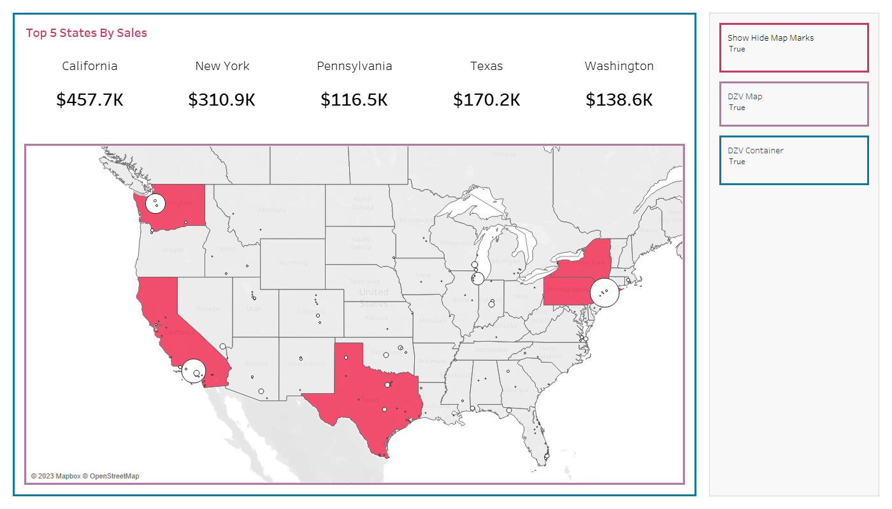
In the previous blog we had our true false parameters showing on the page.
Now we introduce sheet buttons to control what is on the page, making for a much more sleek interaction.
Here is our basic example, here we have a map and when we click the purple box / sheet the map will hide,
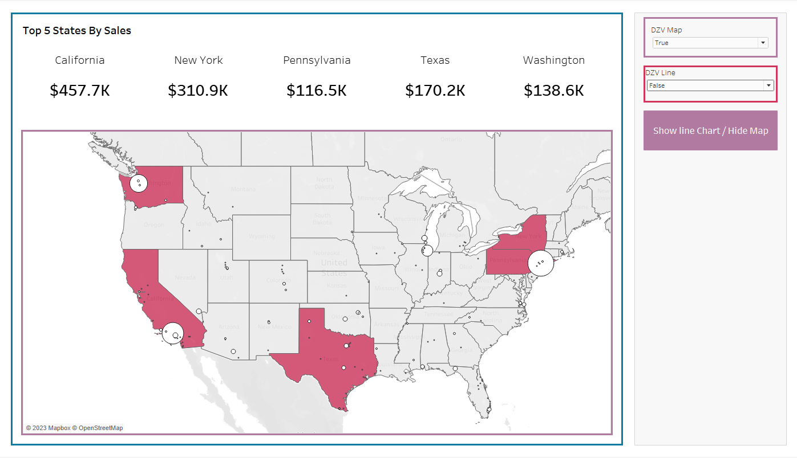
We introduce the same logic for the bar chart, so when we click the red button, the bar chart will hide. Seems simple enough.
Problem is, if we click both those sheets, then both our parameters end up as FALSE, so we have to introduce the reverse logic to set them as TRUE, for when the other one is FALSE? Kind of confusing right... It certainly isn't that intuitive to think about so lets take a look closer.
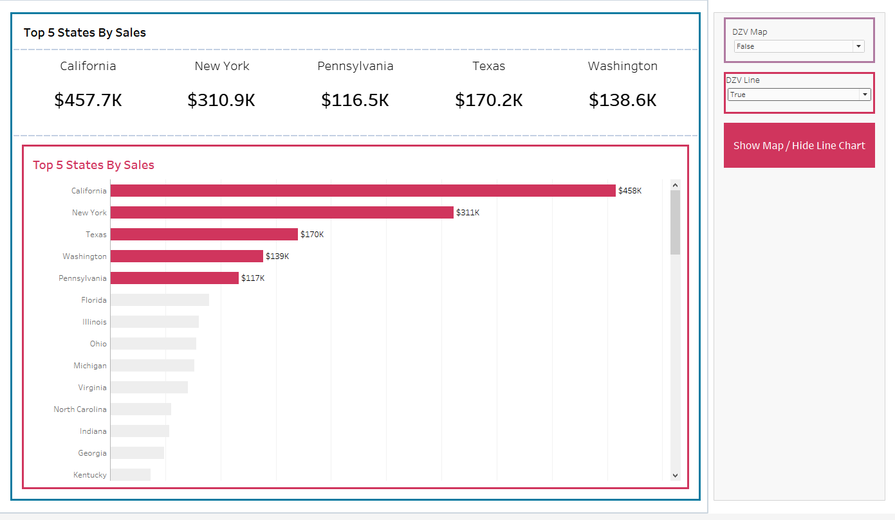
As a brief reminder of blog part one, we have a true false parameter that drives the dynamic zone visibility. We have one for the map, and we can create a new one for our bar chart in the workbook.
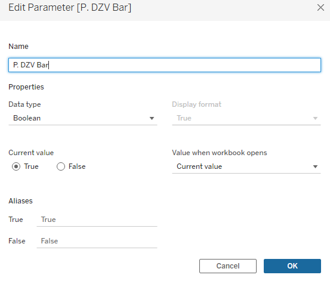
and we can of course set the dynamic zone visibility to use that parameter. Nothing new learnt so far, but now lets introduce the idea of our buttons.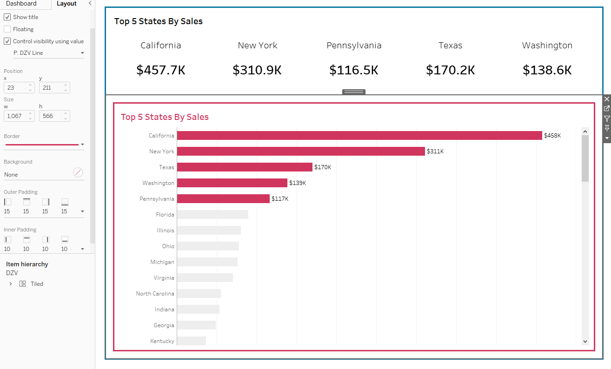
Lets create a fake button, go to new sheet, make the marks a square, add the text of hide bar chart / show map.
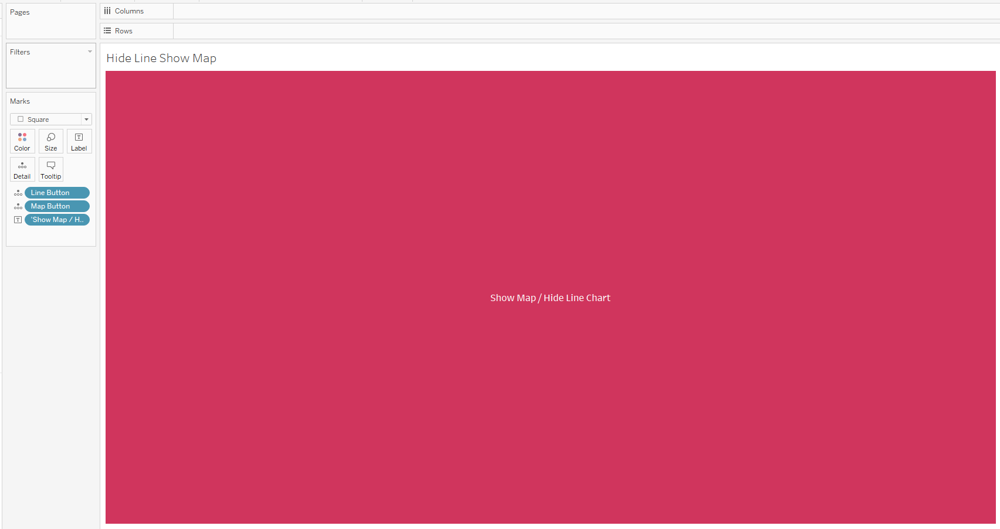
Drag this new button onto the dashboard.
Now we want to have the logic that our parameter (of true or false) is driven by our sheet.
So you will see there are two calculations on detail. They are our button calculations, which just store the parameter.
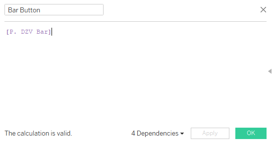
So now we need to set up the parameter action on the sheet.
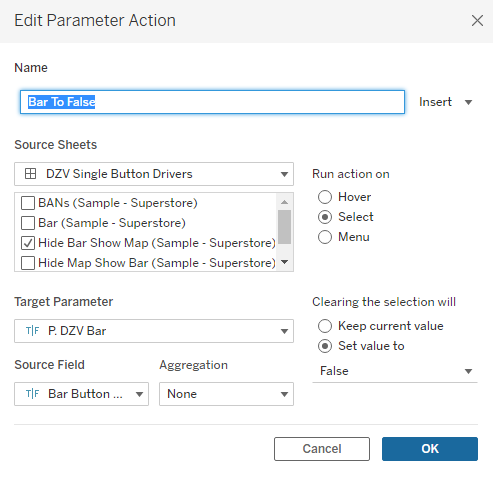
This action is the logical one - We are saying when we click our hide bar button, set the bar boolean parameter to false, source field, the field that contains our bar
You can test this by interacting with it on the dashboard.
Following the same steps we can then complete the same process for the map.
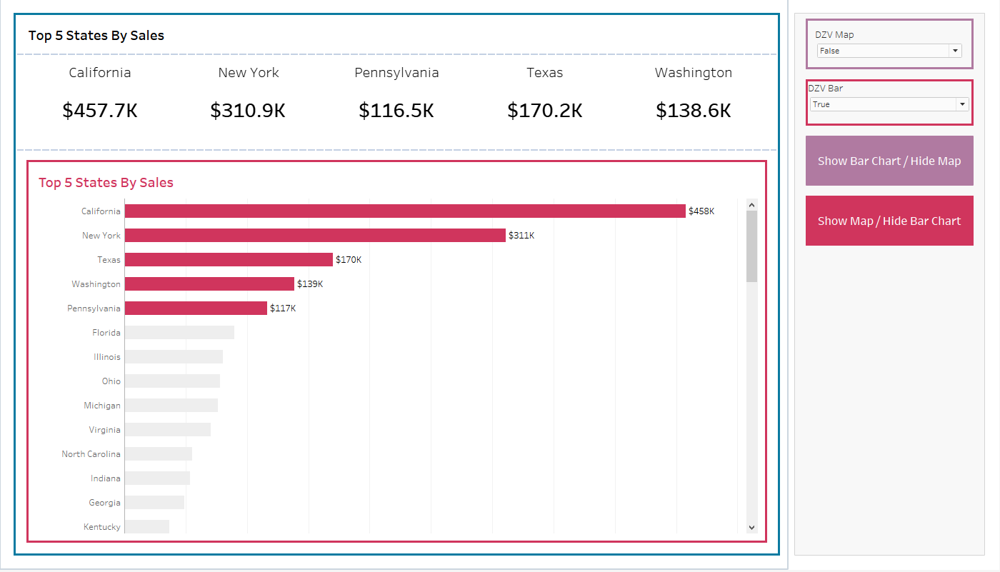
Now this works fine - but it is at a stage where 1 button is driving the map hiding and one button is driving the bar chart to hide.
Problem is now - if we click both buttons, both our parameters are made false and everything disappears.
So we actually now want to create the inverse logic, so that our map button doesnt just set our map to false, but also sets the bar to true.
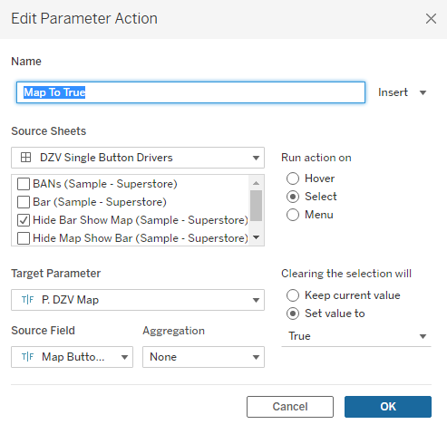
Here we take the map parameter and make it true, using our show map, using the map button.
We can also create the same steps for our bar.
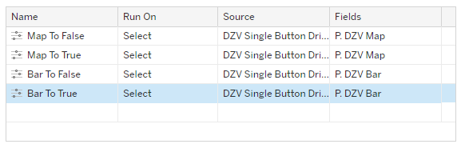
Now with our four actions, we can then have the buttons flicking between the views.
I have left this stage of the workbook as 'Single Button Drivers' so you can see the interaction's.
The final thing to do now is to make the buttons 'switch out' so we can only have one button to click at one time.
Go to the show map red button and control it using P. DZV Bar, and click the show bar purple button sheet and control it using P. DZV Map.
Now we have a button that replaces itself in the view!
Round-Up:
For me dynamic zone visibility really opens up ways of interacting with dashboards. That being said there are a few 'gotchas' to consider.
The inverse logic when changing true and false parameters. This logic increases in complexity the more things you have on the page and what is showing on what screen. Sam Parsons work of items feeling like the 'minimise and maximise' onto the page is a great example of where you can take things.
Containers become so important - Your charts are render dependent on what container they are in. I've tried my best to colour code the different sheet and container borders for this tutorial but make sure your sheets are filling the container when they need to.
Padding!! If you are doing the 'sheet swap' or 'button swap' effect, make sure they line up with one another for a seamless transition!
Naming conventions: It can be quite confusing the idea of setting something true or false on multiple sheets. For example in this user case do I want my button to say 'Hide Map' or do I want it to say 'Show Bar Chart' - They are the same thing but when it comes to my calculations and dashboard this can muddle the brain.
If you have any questions on the workbook - do message me on socials.
LOGGING OFF,CJ